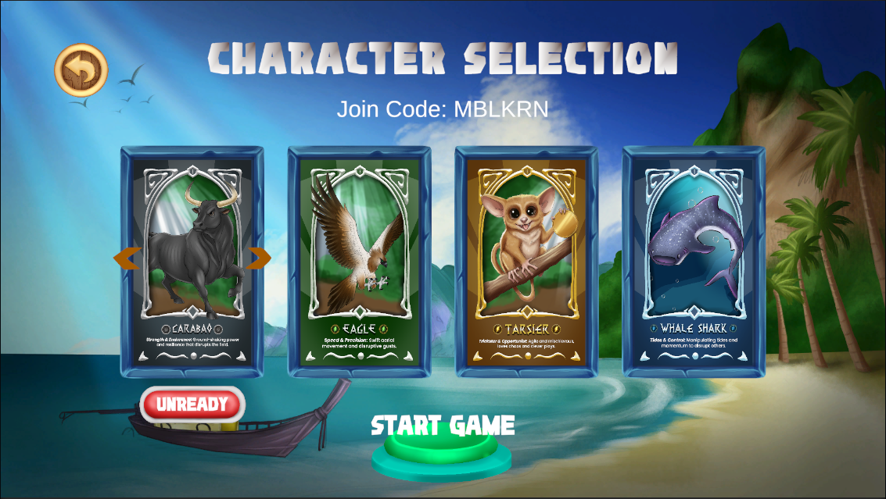
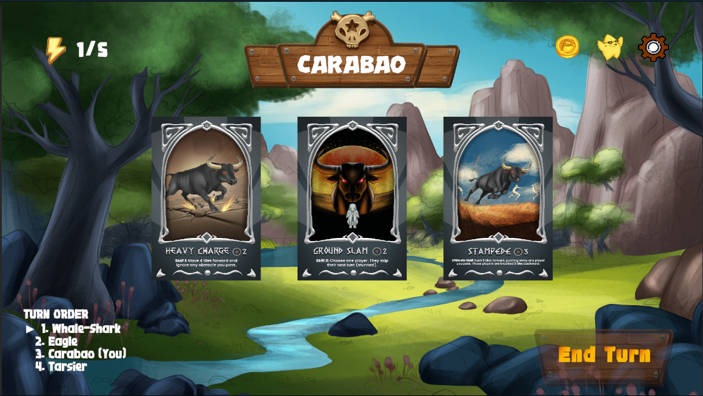
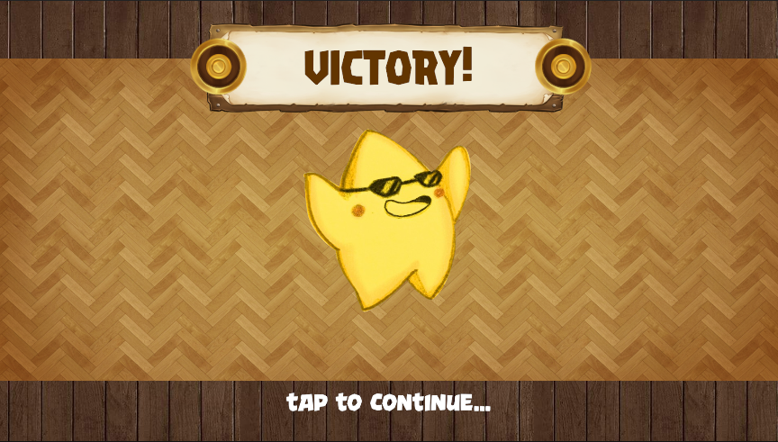
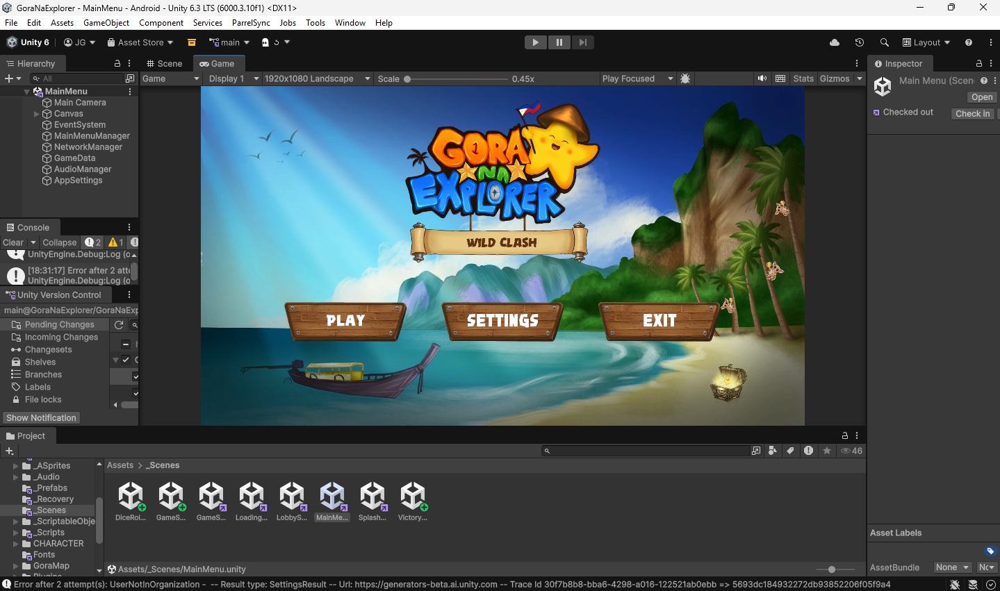

Wild Clash
Unity Multiplayer Strategy Experience
Gora Na Explorer: Wild Clash
2025
Game Developer
Multiplayer Strategy
Gora Na Explorer: Wild Clash is a turn-based multiplayer game built in Unity, where players take on animal-inspired roles rooted in Filipino wildlife. The focus was on building a gameplay loop that balances decision-making, interaction, and replayability—without overwhelming the player.
Introduction
Set within a vibrant, island-inspired world, Gora Na Explorer: Wild Clash is a multiplayer strategy experience where players take on distinct roles and compete through tactical decisions. The game blends cultural influence with structured gameplay to create a dynamic and engaging match flow.



Unity Development
I built Wild Clash in Unity as part of my BSIT journey, using the editor to organize the game scene, place interface elements, and test how the character and gameplay assets worked together.
